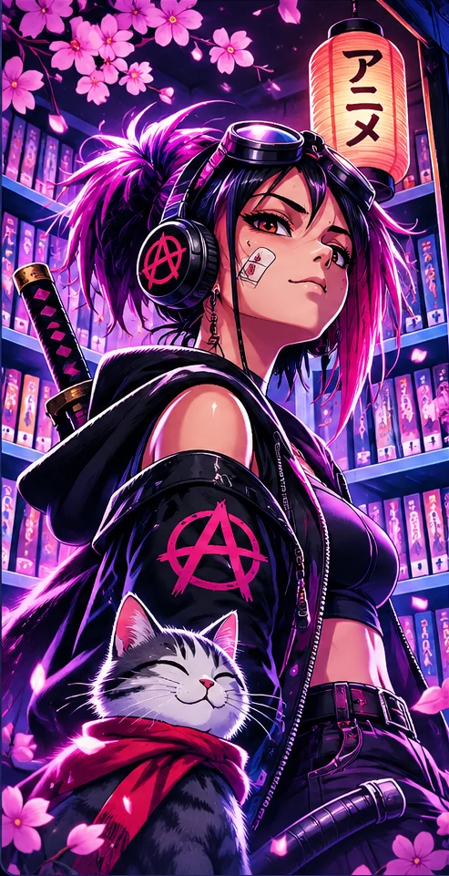
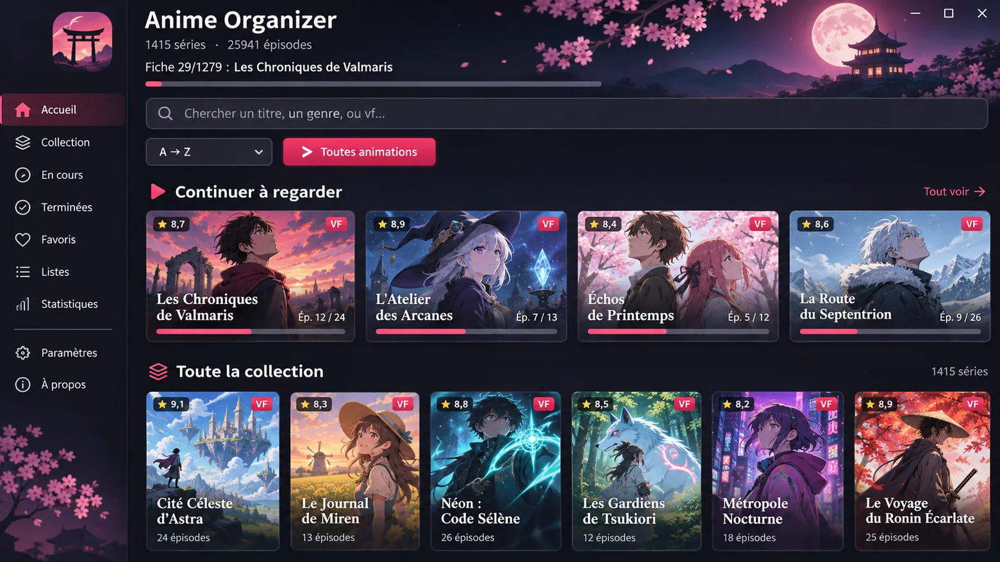

Scan de dossiers, saisons, épisodes, catégories, favoris et progression.
Bibliothèque personnelle · Windows + Android
Ta collection.
Ton univers.
Transforme tes fichiers animés en une bibliothèque immersive : fiches panoramiques, galeries de captures et ambiances musicales personnalisées.
Tes vidéos restent chez toi. Le site ne fournit aucun épisode.

Anime Neon Library · Identité graphique illustrative
Fiches immersivesPanoramas et diaporamas
Captures précisesF2 et F3 sur Windows
Bibliothèque sonoreExtraits F4 et musique locale
Évolutions du lecteur et de la bibliothèque
Regarde, explore, retrouve tes préférences.
Anime Organizer organise tes vidéos personnelles sur Windows et Android, avec une identification plus soignée et une lecture plus confortable.
🎬 Mini-lecteur intégré
Réduis la vidéo et parcours les fiches sans interrompre l'épisode. Sur Windows, la fenêtre reste pour l'instant liée à Anime Organizer.
🔊 Langue et sous-titres par série
Ton choix audio et « Aucun sous-titre » est retenu pour les épisodes suivants de chaque série.
🔎 Identification plus soignée
Recherche dans plusieurs catalogues, comparaison des titres et cache pour éviter les appels répétés, sans privilégier un résultat incertain.
💾 Bibliothèque et sauvegardes
Retrouve ta progression et protège tes réglages avec les sauvegardes de l'application.
Les visuels de ce site sont des démonstrations fictives : aucune image d'épisode de ta collection n'est publiée.
Découvrir les outils
Tout est rangé. Tout est à portée de main.
Choisis ton activité : retrouver tes épisodes, personnaliser les fiches ou créer tes propres extraits. Certaines fonctions sont spécifiques à Windows.
Affiches, synopsis, années et correction manuelle des fiches ambiguës.
Importer une image, choisir une capture, ajuster le cadrage et lancer un diaporama.
Lire les fichiers personnels, retrouver sa progression et enchaîner les épisodes.
Captures d'épisodes, bibliothèque de miniatures et classement par animé.
Importer des morceaux ou extraire les dialogues d'une vidéo sans modifier l'original.
Fichiers audio nommés, extraits multiples, lecture fixe, successive ou aléatoire.
Rechercher les openings et endings référencés ; pas de téléchargement automatique d'œuvres.
Les vidéos ne sont pas hébergées ici. Les recherches peuvent interroger des catalogues en ligne.
Raccourcis Windows
F2
Capture d'imageEnregistrer une image dans la galerie.
F3
Panorama principalUtiliser une scène comme fond de la fiche.
F4 ×2
Extrait audioMarquer début puis fin, et extraire en MP3.
Aperçus
Explore Anime Organizer en images.
Quatre scènes originales pour découvrir la bibliothèque, les fiches, le mini-lecteur et la lecture à distance PC–Android.

Collection, filtres et progression : aperçu de démonstration.
Visuels de démonstration générés, pas de captures réelles. Les séries, personnages et illustrations ont été imaginés pour ce site. Les interfaces sont des concepts : certains menus ou fonctions peuvent différer de l'application installée. Aucune image de ta collection personnelle n'est publiée.
Clique sur l'image pour l'ouvrir en grand. La connexion PC–Android nécessite un PC disponible et correctement configuré ; le mini-lecteur indépendant Windows peut varier selon la version installée.
Téléchargements gratuits
Choisis ta version.
Les boutons conduisent aux fichiers de la dernière publication GitHub Releases. Les trois formats sont distincts.
ANDROID
Application APK
Pour installer Anime Organizer sur un appareil Android compatible.
↓ Télécharger l'APKWINDOWS
Installateur EXE
Installation guidée avec les illustrations Anime Neon Library.
↓ Télécharger l'EXEWINDOWS PORTABLE
Version ZIP
Décompresse l'ensemble des fichiers et lance l'application sans assistant.
↓ Télécharger le ZIPSi un lien est indisponible, ouvre la dernière Release. Le fichier
SHA256SUMS.txt permet de comparer les empreintes des téléchargements lorsqu'il est publié. Un hash ne constitue pas une analyse antivirus.En trois étapes
01Installe l'application
Choisis Windows ou Android et récupère la version appropriée.
02Ajoute tes dossiers
Anime Organizer identifie tes œuvres et construit ta bibliothèque.
03Personnalise tes fiches
Images, panoramas, scènes préférées et extraits audio locaux.
Questions fréquentes
L'application est-elle gratuite ?
Oui, elle est distribuée gratuitement depuis son dépôt GitHub.
Est-ce que le site fournit des épisodes ?
Non. Anime Organizer lit et organise tes propres fichiers.
Comment fonctionnent F2, F3 et F4 ?
Sur Windows, F2 capture une image, F3 la définit comme panorama et deux appuis sur F4 marquent un extrait audio local.
Mes vidéos restent-elles sur mon disque ?
Oui. Les recherches de métadonnées peuvent contacter des services externes en transmettant des titres, pas tes vidéos.